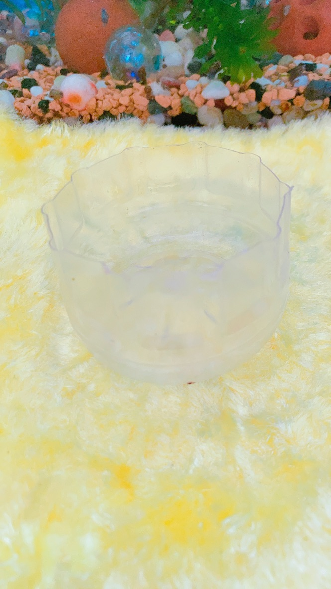
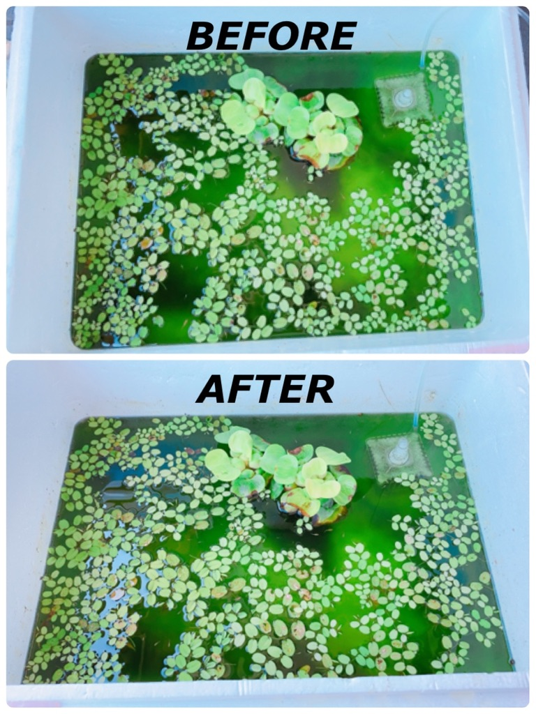

日々の世話と水換えの方法
日々の世話
餌やりの頻度と量をお伝えします。
【１日のえさやり回数】
- 春：１〜２回（朝、夕）
- 夏：２〜３回（朝、昼、夕）
- 秋：１〜２回（朝、夕）
- 冬：１回程度（朝）
【１回の餌の量】
- ５分であげた餌がなくなるぐらいの量
色んなサイトで調べた感じ、こんな感じです。
水温があたたかくなると、めだかもよく動くようになるので、
その分ご飯たくさん食べたくなるみたいです。
逆に冬は寒いので動かないため、餌もそんなにいらないみたいです。
餌をやりすぎるとめだか死にます！
あと水が汚くなりますので気をつけてください。
水換えの方法
正直ぶくぶくと石入れておけば水かえなくてもまあまあきれいです。
この水槽のものは買ってからしばらく経ってもきれいなので、特に水換えはしてませんが、
それ以外の外に出しているものは、水草を入れているせいか、緑に濁ります。
水換えの方法（我流）をお伝えします。
- 水換え前（左）と後（右）
- 使用した物
- 入れ替えるようの容器（私は今回は発泡スチロール）
- 空のペットボトル
- 椅子
 左のキッタナイ水は流石にやばいので、発泡スチロールの入れ物に変えました。
左のキッタナイ水は流石にやばいので、発泡スチロールの入れ物に変えました。以上です。
ペットボトルというのは以下のように、切り取ったものです。

なんとなくお分かりかと思いますが、私のやり方は、
汚い方から上記ペットボトルの容器で、めだかをすくい上げ、きれいな方に移動します。
これが一番キレイになります。(上の発泡スチロールが入れ替え後です。)
「汚い水槽の水を半分すくい上げて、きれいな水を足す」
という方法もあると思いますが、
その方法を行った写真が以下です。

多少しか変わらなかったので、私は水を一気に変えてめだかを1匹1匹すくい上げてます。
水について
普通の水道水はカルキが入っているので、
必ず日光に1日以上さらした水にめだかをいれてください
水道水をそのまま使うとメダカ死にます。
（タニシもいやがってました）
私の家は浄水器があるので、浄水器を通した水であれば、1日、日光にさらさなくてもメダカを入れて大丈夫です。
以上、日々の世話でした！